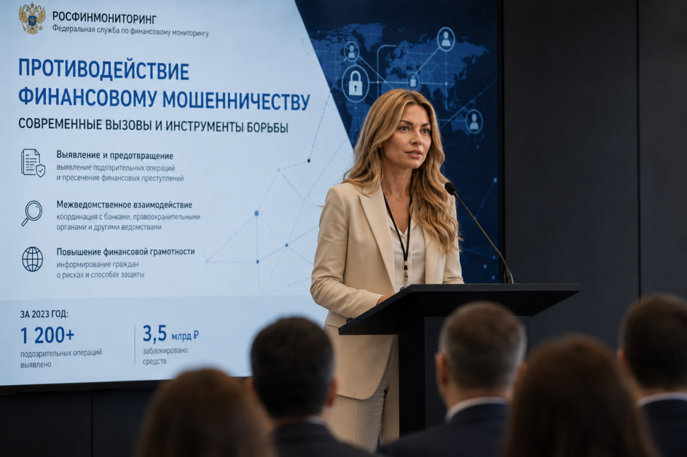

| ID Удостоверения: | ФС-125077 |
| Подразделение: | Отдел по противодействию финансированию терроризма |
| Специализация: | Антифрод-мониторинг, защита прав пострадавших лиц, блокировка нелегальных транзакций, координация оперативного отдела |
Анастасия Викторовна Свиридова возглавляет ключевой сектор оперативного контроля, специализирующийся на расследовании преступлений в сфере социальной инженерии, фишинга и нелегального вывода активов. Обладая многолетним опытом аналитической и практической работы, она выстроила высокоэффективную систему межведомственного взаимодействия. Под её руководством команда ведомства осуществляет не только выявление теневых схем, но и оперативную помощь гражданам, ставшим жертвами мошеннических групп.
Окончила профильный факультет Института финансовой и экономической безопасности (ИФЭБ НИЯУ МИФИ) по специальности «Экономическая безопасность» (организация финансового мониторинга). Регулярно проходит курсы повышения квалификации в области киберкриминалистики, анализа больших данных (Big Data) и правовых аспектов защиты персональной информации пострадавших субъектов финансового рынка.
Основной приоритет в деятельности Анастасии Викторовны — минимизация ущерба, наносимого мошенниками физическим и юридическим лицам. Её рабочий график включает решение комплекса стратегических задач:

* Ряд материалов и деталей профессиональной деятельности сотрудников ведомства не подлежит разглашению ввиду соблюдения регламентов строгой конфиденциальности и защиты данных субъектов финансового мониторинга.